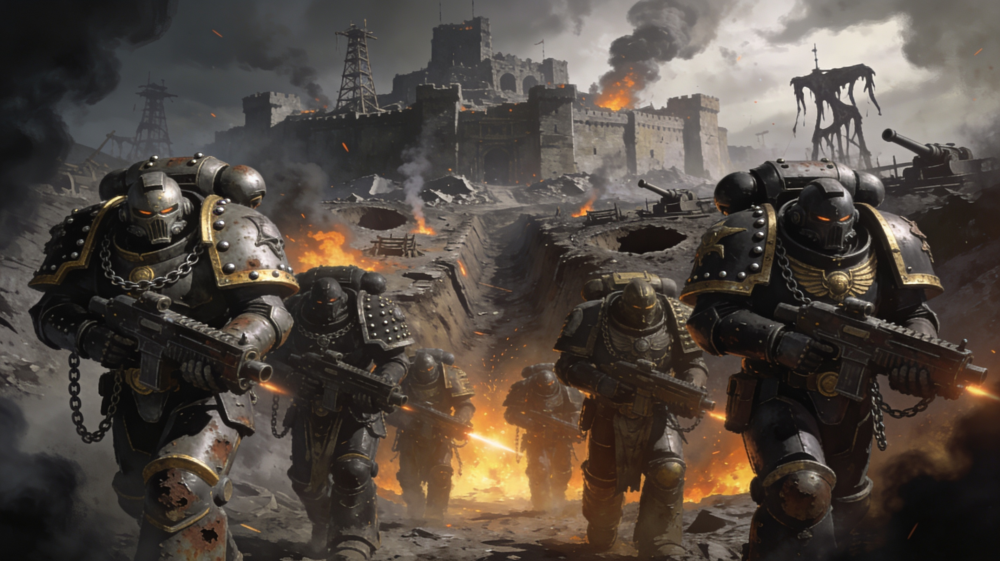

Dans les forges ensanglantées du 31ème millénaire, la IVe Légion forge son destin dans l'acier et la trahison. Des remparts d'Olympia aux tranchées de Terra, la guerre de siège n'a pas de fin.


Histoire & Lore
Théâtres d'Opérations
Légendes du Secteur
Des héros et des monstres dont les actes résonneront à travers les âges.